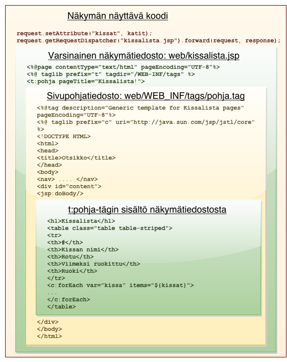

Näkymien tekeminen ja JSP
Tiivistelmä:
- Laita servlettisi käyttämään HTML:n tulostukseen JSP-tiedostoa.
- Tee JSP-tägitiedosto, ja laita JSP-sivusi HTML-runko siihen. Ota tägitiedostosi käyttöön servlettisi JSP-tiedosssa.
- Tee sovelluksesi servleteille yläluokka, johon voi sijoittaa yleiskäyttöisiä toimintoja.
Javassa näkyminä käytetään JSP-päätteisiä tiedostoja, jotka koostuvat pääasiassa HTML-koodista, jonka seassa on nettijavaa varten toteutetulla Unified Expression Language -kielellä koodattuja käskyjä.
Yksinkertaisimmillaan JSP-tiedostona tehty näkymä näyttää tältä:
<%@page contentType="text/html" pageEncoding="UTF-8" trimDirectiveWhitespaces="true" %>
<!DOCTYPE html>
<html>
<head>
<meta http-equiv="Content-Type" content="text/html; charset=UTF-8">
<title>JSP Page</title>
</head>
<body>
<h1>Hello World!</h1>
</body>
</html>JSP-tiedoston käyttäminen servlet-luokassa
JSP-tiedoston näyttäminen tapahtuu aina servlet-luokan koodista käsin käyttämällä RequestDispatcher-tyyppisen olion forward-metodia, jolle annetaan parametrina HttpServletRequest ja HttpServletResponse-oliot. RequestDispatcher-olion saa HttpServletRequest-oliolta antamalla sille sivun, jolle pyyntö ohjataan.
protected void processRequest(HttpServletRequest request, HttpServletResponse response) {
response.setContentType("text/html;charset=UTF-8");
/* Luodaan RequestDispatcher-olio, joka osaa näyttää lista.jsp:n */
RequestDispatcher dispatcher = request.getRequestDispatcher("lista.jsp");
/* Pyydetään dispatcher-oliota näyttämään JSP-sivunsa */
dispatcher.forward(request, response);
}Nyt mikäli ylläoleva servletti on web.xml-tiedostossa määritelty näkymään osoitteessa /lista niin näkyy tässä osoitteessa käytännössä sama sivu kuin osoitteessa /lista.jsp.
Nämä kaksi osoitetta ovat kuitenkin täysin eri asia. Ero näkyy etenkin siinä vaiheessa, kun JSP-sivulla näytetään servletissä määriteltyjä muuttujia tai esimerkiksi kun sivut haluaa näyttää vain kirjautuneille käyttäjille. Näitä pelkkä JSP-sivu ei osaa tehdä. Käyttäjä kannattaa ohjata aina servletin takana oleville sivuille.
Ota käyttöön oma JSP-näkymä
Luo tässä vaiheessa projektisi luokille oma paketti. Esim. kissalistan paketti voisi olla Kissalista. Tee pakettiisi alipaketit servlettejä ja malleja varten. Esimerkiksi Kissalista.Servlets ja Kissalista.Models.
Luo sitten itsellesi JSP-tiedosto ja servlet-luokka ja laita servletin pyynnön käsittelymetodiin RequestDispatcher-oliota käyttävää koodia, joka ohjaa luomaasi JSP-tiedostoon ja kutsuu metodia forward.
Viimeistään tässä vaiheessa joutunet lisäämään muutaman importin servlettiisi. Näissä esimerkeissä niitä ei tulla erikseen luettelemaan, mutta esim. NetBeans osaa lisätä ne varsin kätevästi tiedoston alkuun, kunhan klikkailee sen antamia virhepalluroita.
Muuttujien käyttö
JSP-koodiin on mahdollista sijoittaa servletiltä saatuja muuttujia ja mm. ehtolausekkeita. esimerkiksi virheviestin näyttämisen voi toteuttaa seuraavasti:
Asetetaan processRequest-metodissa aineistopyyntöä mallintavalle HttpServletRequest-oliolle attribuutti, joka sisältää viestin.
protected void processRequest(HttpServletRequest request, HttpServletResponse response) {
response.setContentType("text/html;charset=UTF-8");
/* Asetetaan virheviesti */
request.setAttribute("virheViesti", "Sinulla ei ole ainuttakaan kissaa!");
/* Näytetään JSP-sivu sivux.jsp */
RequestDispatcher dispatcher = request.getRequestDispatcher("sivux.jsp");
dispatcher.forward(request, response);
}JSP-sivulla on mahdollista näyttää pyyntöön asetettuja attribuutteja suoraan syntaksilla ${attribuutin_nimi}:
<div class="alert alert-danger">Virhe! ${virheViesti}</div>Huomaa!
Huomaa, että JSP-sivussa käytetyt attribuutit ovat täysin erillisiä servletin sisältämistä muuttujista ja niiden nimistä. Yhteys näiden kahden välille muodostuu ainoastaan setAttribute-metodin kutsujen myötä. Selkeyden vuoksi on kuitenkin hyvä idea nimetä sekä normaalit Java-muuttujat että JSP-sivun käyttämät attribuutit samaan tapaan.
If-ehtolauseet
Myös erilaisia koodirakenteita kuten ehtolausekkeita voi käyttää ottamalla käyttöön JSTL-tägikirjaston laittamalla tiedoston alkuun taglib-referenssin:
<%@ taglib prefix="c" uri="http://java.sun.com/jsp/jstl/core" %>Saatat joutua lisäämään projektiisi JSTL-kirjaston, että viite toimisi. Tämä tapahtuu NetBeansissä avaamalla valikosta projektin ominaisuusikkuna kohdasta File->Project Properties. Paina Libraries-kategoriassa nappia Add Library ja lisää listasta projektiin kirjasto nimeltä JSTL 1.1.
Tämän jälkeen voimme näyttää virheviestin ehtolausekkeen avulla:
<c:if test="${virheViesti != null}">
<div class="alert alert-danger">Virhe! ${virheViesti}</div>
</c:if>Yllä oleva koodi näyttää virheviestin ja siihen liittyvän div-elementin vain jos attribuutti virheViesti on asetettu.
Tag-pohjatiedoston käyttö
Käytännössä suurin osa ohjelmaasi tulevista sivuista tulee sisältämään samanlaisen HTML-rungon, johon sisältyvät sivunavigaatio sekä head-tägin sisältämät otsakkeet ja tyylitiedostolinkit.
Tämän rungon koodia ei turhaan kannata toistaa, vaan se kannattaa sijoittaa omaan uudelleenkäytettävään tiedostoonsa. Javalla tälläiset uudelleenkäytettävät HTML-pätkät kannattaa toteuttaa erityisinä JSP-tägitiedostoina.
Tagitiedoston sisälle voi laittaa mitä tahansa HTML-koodia aivan kuten JSP-tiedostoonkin. Tärkein kohta koodissa on kuitenkin käsky <jsp:doBody/>, jolla voi upottaa tägiin jotain tägin käyttäjän määrittelemää sisältöä.
Myös omia tägispesifisiä muuttujia voi määritellä. Rivi <%@attribute name="pageTitle"%> määrittelee muuttujan pageTitle, jota voi käyttää normaaliin tapaan tagin koodissa kirjoittamalla ${pageTitle}.
Muuttujan sisällön määrittää tägin käyttäjä. Alla olevassa esimerkissä tiedostossa web/WEB-INF/tags/pohja.tag määritellylle tägille annetaan muuttuja pageTitle ja sisältönä yksi h1-elementti.
helloworld.jsp
<%@page contentType="text/html" pageEncoding="UTF-8" trimDirectiveWhitespaces="true" %>
<%@ taglib prefix="t" tagdir="/WEB-INF/tags" %>
<t:pohja pageTitle="Kissalista!">
<h1>Hello World!</h1>
</t:pohja>Tägitiedosto sijoittaa annetut tiedot sen mukaan mitä tägitiedostossa käsketään. Esimerkiksi kissalistan pohjatägitiedosto sijoittaa tägin sisällön navigaatioelementin viereen käyttäen Bootstrap-kirjastoa:
pohja.tag
<%@tag description="Generic template for Kissalista pages" pageEncoding="UTF-8" trimDirectiveWhitespaces="true" %>
<%@ taglib prefix="c" uri="http://java.sun.com/jsp/jstl/core" %>
<%@attribute name="pageTitle"%>
<!DOCTYPE html>
<html>
<head>
<title>${pageTitle}</title>
<meta http-equiv="Content-Type" content="text/html; charset=UTF-8">
<link href="css/bootstrap.css" rel="stylesheet">
<link href="css/bootstrap-theme.css" rel="stylesheet">
<link href="css/main.css" rel="stylesheet">
<script src="http://code.jquery.com/jquery.js"></script>
<script src="js/bootstrap.min.js"></script>
</head>
<body>
<div class="navbar navbar-default">
<div class="container">
<ul class="nav navbar-nav">
<li class="active"><a href="Lista">Lista</a></li>
<li><a href="Logout">Kirjaudu ulos</a></li>
</ul>
</div>
</div>
<div class="container">
<c:if test="${pageError != null}">
<div class="alert alert-danger">${pageError}</div>
</c:if>
<jsp:doBody/>
</div>
</body>
</html>Kun yllä oleva JSP-koodi ja tägitiedosto ajetaan syntyy sivu, jonka otsikko on “Kissalista!” ja jonka sisältönä on sivunavigaatio ja Hello World -toivotus.
Kun sivupohja on käytössä, jokainen sivu rakentuu kerroksittain kuten tässä kaaviokuvassa: 
Kuvassa esiintyvä HTML-koodi vastaa melko tarkkaan sitä minkä Tomcat lähettää selaimelle. Huomaa, että <html>-tägi, navigaatiot yms. toistuvat elementit tarvitsee kirjoittaa vain sivupohjanana toimivaan pohja.tag-tiedostoon. Jos ne vahingossa kirjoittaa myös näkymätiedostoon, tuloksena on rikkinäistä HTML:ää:
<!DOCTYPE HTML>
<html>
<head>
<title>Otsikko</title>
</head>
<body>
<nav> .... </nav>
<div id="content">
<!DOCTYPE HTML>
<html>
<head>
<title>Otsikko</title>
</head>
<body>
<nav> .... </nav>
<div id="content">
<h1>Otsikko</h1>
...Tee nyt projektillesi HTML-pohjatiedosto kansioon web/WEB-INF/tags/pohja.tag. Ja sijoita siihen oma sivupohjasi.
NetBeansistä löydät tägitiedoston uusien tiedostojen valikosta Web-kohdan alta nimellä Tag File. Voit käyttää seuraavia asetuksia:
Tyylitiedostojen linkitys
Tag-tiedostoon kannattaa laittaa linkit kaikkiin sovelluksen käyttämiin tyylitiedostoihin. Linkityksessä kannattaa käyttää relatiivisia osoitteita, jolloin sovellus toimii riippumatta siitä mihin osoitteeseen se pystytetään.
<link href="css/main.css" rel="stylesheet">Mikäli sovelluksesi osoitteiden hakemistorakenne on kuitenkin monitasoinen, joudut käyttämään erityistä osoitemuuttujaa, joka osoittaa aina sovelluksesi juuren osoitteseen:
<link href="${pageContext.request.contextPath}/css/main.css" rel="stylesheet">Tietokantasovelluksen kokoisissa nettisovelluksissa ylläolevan tapaisen funktion kirjoittaminen on kuitenkin harvoin tarpeellista, sillä relatiiviset osoitteet riittävät yleensä hyvin.
Tyhjien rivien trimmaaminen
JSP-koodiin upotetuilla tägeillä on ikävä tapa jättää valmis HTML-koodi täyteen tyhjiä rivejä. Tämä on ongelmallista etenkin HTML:n dokumenttien alun osalta, sillä standardin mukaisen HTML-koodin ensimmäisen rivin pitäisi sisältää <!DOCTYPE>-tägi, jotta selaimet näyttäisivät sivun standardin mukaisesti oikein.
Tähän on onneksi JSP:ssä valmiina ratkaisu. JSP-tiedoston ensimmäisellä rivillä olevalle <%@page>-tägille pitää vain lisätä attribuutti trimDirectiveWhitespaces:
<%@page contentType="text/html" pageEncoding="UTF-8" trimDirectiveWhitespaces="true" %>Sama temppu on tehtävä myös tag-tiedoston ensimmäisellä rivillä olevalle <%@tag>-tägille:
<%@tag description="Generic template for Kissalista pages" pageEncoding="UTF-8" trimDirectiveWhitespaces="true" %>Attribuutin laittamisen seurauksena kaikki ylimääräiset tulostumattomat merkit (nk. whitespace) jätetään valmiista HTML-koodista pois, jolloin tuloksena on standardinmukaista HTML:ää.
Toistuva koodi kannattaa laittaa omaan luokkaansa
Siinä vaiheessa kun servlet-luokkia alkaa tulla projektiin useampia alkavat tietyt toiminnot toistua luokasta toiseen. Hyvänä esimerkkinä JSP-sivun näyttämiseen tarvittu koodinpätkä, virheilmoitusten lähettäminen näkymälle näkyviin, ja kirjautumisen tarkistaminen.
Tee itsellesi uusi luokka, ja lähde rakentamaan siihen yleisiä toiminnallisuuksia omina metodeinaan. Laita siihen ensimmäiseksi metodi, jolla saat näytettyä JSP-sivun. Kehittele myös tapa näyttää sivupohjassasi sovelluksen virheitä ja tee metodi joka aktivoi tuon tavan. Useimmiten tähän kannattaa käyttää setAttribute-metodia ja jotain sovittua attribuuttia, jonka arvo näytetään virheviestinä.
Voit laittaa uuden luokkasi perimään HttpServletin ja periyttää kaikki muut servlettisi siitä. Näin luokkasi metodit ovat kaikissa projektisi servlet-luokissa suoraan käytettävissä.
Linkkejä
Seuraavaksi:
Seuraavaksi otamme käyttäjämallin, JSP-sivut ja servletit käyttöön yksinkertaisen kirjautumisen toteuttamiseen.